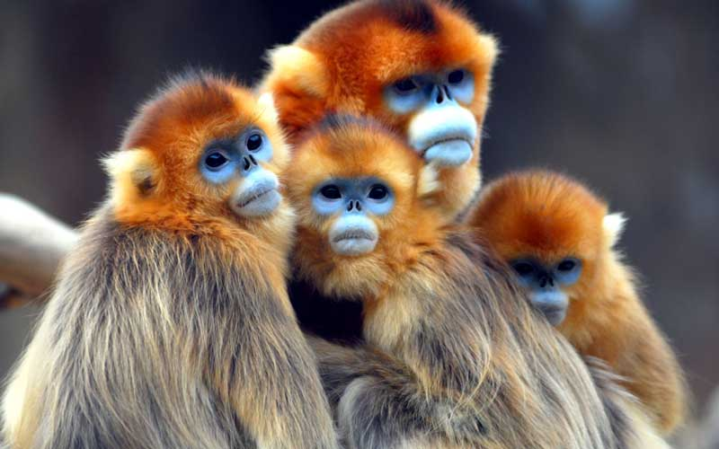

Monkey Information
- Monkey Habitat
-
- The distribution for the Monkey covers may regions around the world. They tend to live in forest regions where they have lots of trees around them. Some of them live in the savannahs though or in the mountain regions.
- Monkey Anatomy
-
The Anatomy of a Monkey is very interesting. They have bodies that are designed to give them both strength and agility. They are flexible and they are fast. This allows them to get away from predators and to thrive in their natural environment
-
-
Monkey Feeding
- The feeding habits of Monkeys are very interesting. What they will consume depends on the species. However, there are many common elements that they all seem to follow along.
- Monkey Reproduction
-
The reproduction process can be full of rituals for the Monkey. Those rituals will depend on the species though. They generally will become mature between 4 and 5 years of age. The females are attracted to the biggest and strongest males
- Monkey Evolution
- Any time the subject of Monkey Evolution comes into the picture we have the debate over Darwin’s Theory. Are we so closely related to primates that we branched off from them? There is certainly plenty of DNA evidence to show that we are very closely related genetically to Apes as well as to the various Monkey species.
- Monkey Predators
-
There are various types of predators out there that are known to feed on Monkeys. What they have to worry about though depends on the size of the species as well as the location. Here are some of the common elements that these primates have to deal with in their natural environment.
-
Monkey Social Structure
-
The Monkey social structure is very interesting to observe. They are very intelligent animals and need socialization for them to be able to thrive in their natural environment. The overall structure can vary based on the species of Monke
Types of Monkeys
- Spider Monkey
- There are 7 known sub species of the Spider Monkey. They belong to the class of New World Monkeys. They are believed to be the biggest of all the different Monkeys in that particular class. They can be used for various types of lab experimentation too and often are. This is because they are closely related to humans and there seems to be an abundance of these Monkeys.
- Squirrel Monkey
- The Common Squirrel Monkey is one that gets its name for looking very similar to the Squirrel. They are part of the New World Monkeys.
- Vervet Monkey
- The Vervet Monkey is an Old World classification. There are 5 known subspecies that have been identified. They have a very unique appearance to them which helps them to be separated from other types of Monkeys found in the world.
- Monkey Species
- There are more than 260 species of Monkeys found in the world today. They are derived from early primates that have been around for millions of years. There isn’t enough information about evolution to say with certainty how they came to be.
- Proboscis Monkey
- The Proboscis Monkey is also called the Monyet Belanda Monkey, which means the long nosed Monkey. It belongs to the Old World classification. In the Egyptian Culture they were worshipped as a very unique animal and believed to be special to the gods.
- Pygym Marmoset
- There are many names that you may hear the Pygmy Marmoset called by. They are known as the Pocket Monkey, Little Lion, and the Dwarf Monkey. It is all one and the same though regardless of the terminology being used. They are the smallest of all the Monkeys, and one of the very small primates in the world. They weigh less than 5 ounces when fully mature. There are 2 sub species that are known to exist.
- Rhesus Macaque
- The Rhesus Macaque is also known as the Rhesus Monkey. It belongs to the Old World category and is among the best known. These are small Monkeys with pink faces that don’t have any fur on them.
Humans and Monkeys
- Monkeys in Popular Culture
- Monkeys have always been part of popular culture. They are part of very early religions including Hinduism and Buddhism. They are symbols too in order to ward off evil. The see no evil, speak no evil, and hear no evil shows three Monkeys
- Monkey Conservation
- Many of the species of Monkeys have serious problems due to human efforts. This means that we have to strive to try to help them. For many species the numbers have dropped so significantly in the past several decades that they are in serious danger of becoming extinct.
Top Monkey Facts

- There are 264 known Monkey species
- A Monkey is a Cercopithecoid or a Platyrrhyne.
- The smallest Monkeys are about 6 inches long and 4 ounces.
- The largest ones can be up to 3 feet long and weigh up to 77 pounds.
- The Monkey is part of the Zodiac signs for the Chinese calendar.